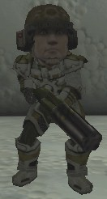
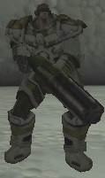
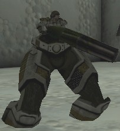
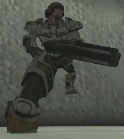
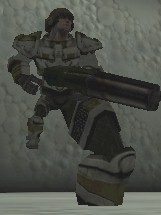
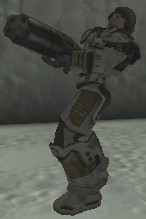
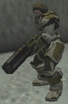
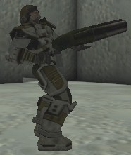
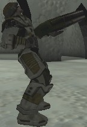
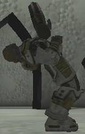

UDN
Search public documentation:
SkelAnim2
Interested in the Unreal Engine?
Visit the Unreal Technology site.
Looking for jobs and company info?
Check out the Epic games site.
Questions about support via UDN?
Contact the UDN Staff
Unreal Skeletal Animation 102
Note that this document refers to UE2, and has not been updated for UE2.5. Revision history: Last updated by Chris Sturgill (Demiurge Studios?) 23 March 2004 for nomenclature. Updated by Joe Graf to fix some grammar, Twiki-ness, and add a caveat. Updated by Carlos Cuello to fix setbonedirection. (Thx Carlos for fixing my burg--I mean bug)Introduction
In the previous article, SkelAnim, we looked at the skeletal animation classes and some of their important members and methods (CodeDrop 2226). This article explores two functional areas of those classes: scaling and rotating the skeletal bones. These features are explored via sample classes all of which derive off of WarCOGGrunt.Scaling Bones
Imagine a game-play modifier that used only a sniper rifle. Imagine that it was a variation on the FatBoy mutator (modifys the game play rules) from Unreal Tournament, except that rather than making the whole character appear to be a different size only the player's head changed size. This way lesser players would run around with shrunken heads and elite players would have giant sized heads. Players with the tiny heads would be hard to "head shot", but players with lots of frags would be relatively easy to hit. In the old vertex based animation code such a concept was not possible. However, with the skeletal animation system this is relatively easy (see caveat below). If you refer back to Table 5 of the previous article, SkelAnim, you will see the Scalers array. This array is used to scale skeletal bones during rendering. Setting the scale of a bone is done by calling SetBoneScale(), taking three parameters. The first parameter specifies the slot in the Scalers array that is being set. The second parameter specifies the scaling factor that is to be applied to the bone. The final parameter identifies which bone is to be scaled. For instance:SetBoneScale(0,1.25,'head');
Caveat: Vito explained to me that this is not "easy", since there are not multiple hit detection cylinders. To make
this "easy" game play modification the hit detection code must take into account the bones with their
appropriate scalers, translations, and rotations applied. Then the code would have to determine whether the hit
occured on the "head" paying attention to the bone scale, rotation, and translation. So what I thought was "easy"
is actually quite involved. :(
In the case above, we are scaling the bone named "head" by a factor of 1.25 and are placing
that scaler in slot 0. The result is a head that is 25% larger than it was before the
call. To remove the scaling effect you call the SetBoneScale() method only supplying
the slot number. This tells the method to zero out the scaling factor and the bone involved.
To illustrate this effect, I created a simple derivative of the WarCOGGrunt, called
HeadScaler. Figure 1 shows the player's head as if they were suffering from gigantism.
Figure 2 yeilds an effect similar to the shrunken heads seen in the movie Beetlejuice.

Figure 1 - A large headed player
Figure 2 - Tiny, tiny head The code to produce this effect is very simple. I overloaded the PlayFiring() method so that when the primary fire is used the head is increased in size by 10%, while the alternate fire shrinks the head by 10%. The PlayFiring() method is seen below:
function PlayFiring()
{
// Primary fire makes the head grow by 10%
// Alternate fire makes the head shrink by 10%
if( Controller.bFire != 0 )
{
flHeadScale += 0.1;
}
else
{
flHeadScale -= 0.1;
}
// Set the new scale
SetBoneScale(0,flHeadScale,'head');
}
What happens if the player's mesh does not have a bone named "head"? In that case, the
bone won't be found in the reference skeleton and the scaling request is ignored. This
is not the same as triggering an Accessed None error. There are no bad side effects other than the CPU
cycles wasted executing a function that, in the end, does nothing.
The HeadScaler class only scales one bone, the head. Consider the case of scaling an
arm or a leg. Would you have to to know each of the bones in the arm and apply scalers
to each of those bones? The answer to this question is "No." The skeletal system uses a
hierarchy of bones, so that scaling a parent also affects all of its children. So if I
wanted to scale the right arm by 50% percent I would use the following code:
SetBoneScale(0,1.5,'r_shoulder');
which would increase the size of the shoulder and the 16 bones that are attached to it.
As an example of the hierarchical scaling in action, I created two more grunt derived
classes, HierarchicalScaling1 and HierarchicalScaling2. The first class scales
the upper body inversely proportional to the lower body. The upper body is specified by
the mid_back and all higher bones connected to it. The lower body is comprised of the
pelvis and all bones beneath it. The effect is extremely weird as seen in Figure 3.

Figure 3 - Morphology run amok As with the HeadScaler sample, the HierarchicalScaling1 performs scaling operations in the PlayFiring() method. For primary fire the lower body increases. The alternate fire increases the lower body. The code for this is:
function PlayFiring()
{
// Primary fire makes the upper body shrink and lower body grow by 10%
// Alternate fire makes the body grow and lower body shrink by 10%
if( Controller.bFire != 0 )
{
flLowerBodyScale += 0.1;
flUpperBodyScale -= 0.1;
}
else
{
flLowerBodyScale -= 0.1;
flUpperBodyScale += 0.1;
}
// Scale the lower body
SetBoneScale(0,flLowerBodyScale,'pelvis');
// Scale the upper body
SetBoneScale(1,flUpperBodyScale,'mid_back');
}
Note that there are two slots used in this method. If you specify the same slot twice,
the second scaling operation replaces the first. Also, notice in Figure 3 that the legs
of the player extend into the floor. This occurs because the scale of the bones is
changed while the player's position in 3D space did not change. A better system would
take into account the player's new height and adjust their location.
A second sample, illustrating the hierarchical nature of the skeletal system, is the
HierarchicalScaling2 class. This class scales two portions of the body just like
the first sample. However, it leaves the majority of the body in its reference scale.
Only the legs are manipulated with one leg growing and the other shrinking proportionally.
Figures 4 and 5 show this in action.

Figure 4 - Leg torture
Figure 5 - More leg torture The code to achieve the results seen in Figures 4 and 5 is the same as HierarchicalScaling1's PlayFiring() method with two small changes, change the 'pelvis' to 'r_hip' and 'mid_back' to 'l_hip'. There is one final thing to note about scaling operations with respect to the skeletal system: they are uniform. Since the scaling operation is determined by a single floating point value, all axes are scaled the same amount. The next article in the series of skeletal animation articles covers how to modify the USkeletalMeshInstance class to expose a non-uniform scaling feature and use from with Unreal Script.Bone Rotation
Just as you can scale bones and their children in a single operation, you can apply a rotator. Though an animation is better to manipulate the skeleton, there might be some reasons why you would want to perform some simple animations using rotators without creating a new animation. For instance, let's say you want to create an effect that twists the torso of a player when a bullet hits a shoulder. You could create a separate animation for each type of movement and each type of body twist. Depending on the number of movement animations and effects that could be a huge undertaking. A simpler solution is to apply the effect to the skeleton so that any animation will automatically gain that feature. As an example of this, I created a class, ShoulderHitSimulator, that twists the torso as if a bullet hit the left or right shoulder. It forces the back to bend back slightly and turn to the side the bullet hit (see Figures 6-8).


Figures 6 through 8 - Left shoulder hit, normal pose, right shoulder hit Because this effect is done using bone rotation, it works with all animations. The code to do this is very similar to the scaling code, as seen below:
function PlayFiring()
{
local rotator rotTorso;
if( Controller.bFire != 0 )
{
rotTorso.Pitch = -6553;
}
else
{
rotTorso.Pitch = 6553;
}
rotTorso.Roll = 500;
rotTorso.Yaw = 0;
// This torques the body as if a bullet impact occured on one of the
// actor's shoulders
SetBoneRotation('lower_back',rotTorso,1.0);
}
The call that does the magic is SetBoneRotation(). It applies a delta rotation to
the specified bone. This means that the rotator does not specify the absolute rotation
coordinates, but instead indicates the amount to change the rotation on top of the
bone's current position. This rotational information is stored in the USkeletalMeshInstance::Directors array.
If you use the method SetBoneDirection(), the
coordinates in the rotator are absolute and replace any of the animation's rotation for
the specified bone (see Figures 9 and 10). These absolute rotators are stored in the USkeletalMeshInstance::WorldSpacers array.
You can clear the effects of a SetBoneDirection() call by passing in 0.0 as the Alpha parameter to SetBoneDirection(BoneTag,BoneTurn,BoneTrans,Alpha).
From the code snippet above, you'll notice that there are three parameters. The first one
obviously specifies the bone to affect. The second one is the rotator as stated in the
previous paragraph. The third one is an alpha value. This value tells the rendering
code how much of the rotator to apply. For instance, if the above code was called with
an alpha of 0.1 instead of 1.0, the real pitch change would be either -655 or 655. By
incrementing/decrementing the alpha value over time, you get a simple tweening
mechanism, though probably not your best choice due to performance issues. Setting the
alpha value to 0.0 disables the rotator, though doesn't delete it.

Figure 9 - SetBoneRotation() with Rotator(0.0, 0.0, 0.0)
Figure 10 - SetBoneDirection() with Rotator(0.0, 0.0, 0.0)